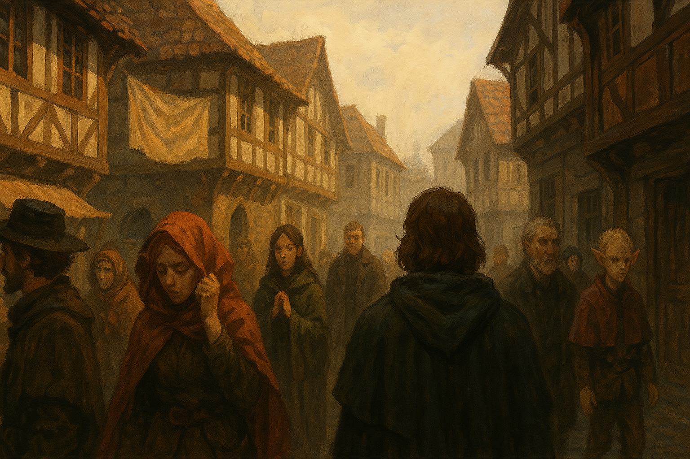

Chapter 1: Bitter Reunion
Korringfield Reunion

Korringfield Reunion
15048.10.01
台北市議員們離開暗巷前，花了點時間，好好將自己喬裝打扮一番。接著，自稱 Rosa 的佛列里夫人便帶領著他們，一起走向爵士的宅邸。一路上，台北市議員們注意到街上的人們偶爾注意了一下他們，不過似乎沒有造成太大的轟動。
另外，台北市議員也訝異的發現，現在的時間竟然已經是 10 月 1 日了，在地下城內的時間，應該沒有待那麼久……。
來到了爵士宅邸，Rosa 夫人上樓喚了 Flaerry 爵士後，眾人才發現 Trisha 似乎消失了蹤影。Uko 告知了 Flaerry 爵士後，化身成了一隻狗狗，而 Usioni 也帶著 King Knicol，兩邊開始分頭尋找 Trisha 的蹤跡。大廳向左向右各有一個長廊，兩個長廊分別有兩扇門。
花了一些時間，兩方都沒有找到 Trisha，停在左側的長廊思忖。突然，他們聽見了右側長廊傳出了關門的聲音，回頭一看，Trisha 從其中一間房間走了出來，躡手躡腳。
幾位冒險者跑了過去，詢問 Trisha 到底去了哪裡。Trisha 從口袋掏出五枚鑽石，要冒險者們保持安靜，並讓每個人各拿走一顆鑽石。大家便安靜地回到大廳去。
Flaerry 爵士帶著大家來到了左側長廊的圖書室，讓大家翻閱他收藏的書籍，台北市議員們也翻找了關於「沃瓦倫的惡魔」傳單、沃瓦倫滅鎮事件的消息、關於拉索斯教的書籍，以及關於如何馴養動物相關的書。
接著，Flaerry 爵士帶著大家上到二樓，讓大家分別挑選一間客房作為房間。大家在房間內稍作休息，Uko 前去找 Trisha，告誡他剛剛的行為是不對的，而 Trisha 也表明自己剛來到這裡，覺得很新奇，所以不太受控制。
Rosa 夫人也前去 Paladin 的房間，告訴他他的父親的事。Paladin 的父親先前因為在王都發生意外，沒有及時醫治，被送回來 Korringfield 並強制退休。Rosa 夫人表示希望 Paladin 前去探望他的父親。
眾人出發回到市中心去，大家分別前往自己想要去的店舖，而 Rosa 夫人則帶著 Paladin 去找他的父親。
來到 Paladin 的老家，敲了敲門，開門的是家裡的老僕人 Jeff。Jeff 告訴 Paladin，很高興他回來了，希望他快去看看他的父親。Paladin 走上二樓，父親的醫生 Dr. Halloway 開了門，和 Paladin 簡單說明了他父親的狀況。目前因為傷勢嚴重，勢必要截肢。如果狀況更糟，很有可能會有生命危險。Paladin 了解狀況後，前去和父親說了說話。Paladin 的父親 Magnus 關心了一下他最愛的孩子 Paladin，也告訴他，如果他哪天沒有要冒險了，自己的爵位會留給他。
在 Paladin 離開前，父親叫住了他，並告訴他，其實他的母親另有其人。Paladin 一直視為母親的人其實並不是他的生母，他是父親在王城 Macksohn 與別人生下的孩子。而 Paladin 的生母被稱為麥克嵩的紫羅蘭（The Violet of Macksohn），本名為 Xandria（珊吉雅）。父親希望 Paladin 有機會可以去王城看看他。